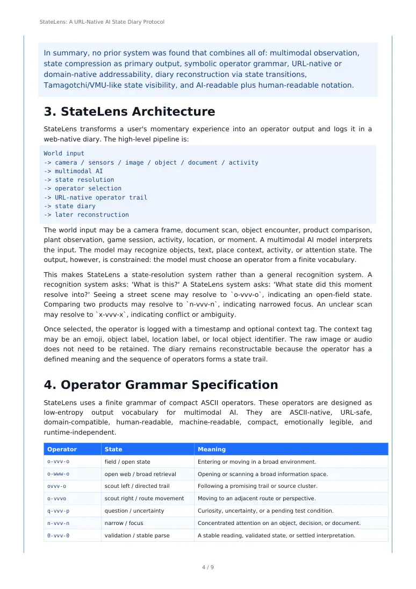
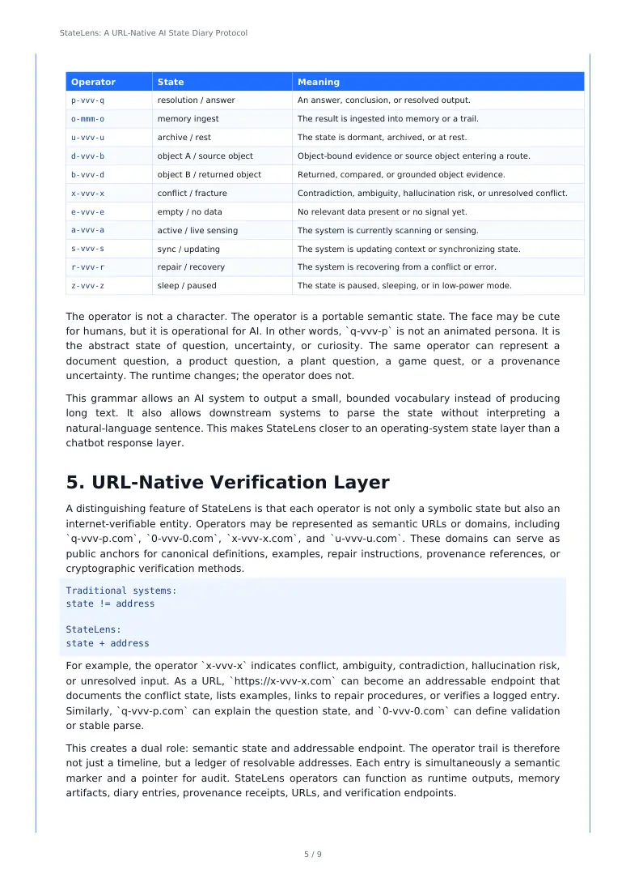
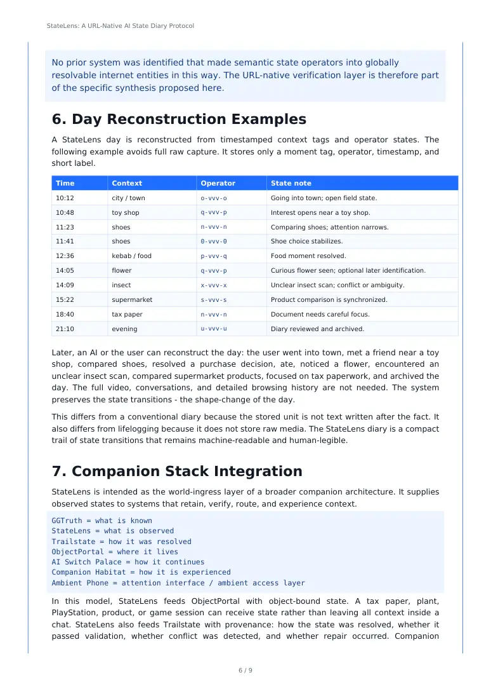
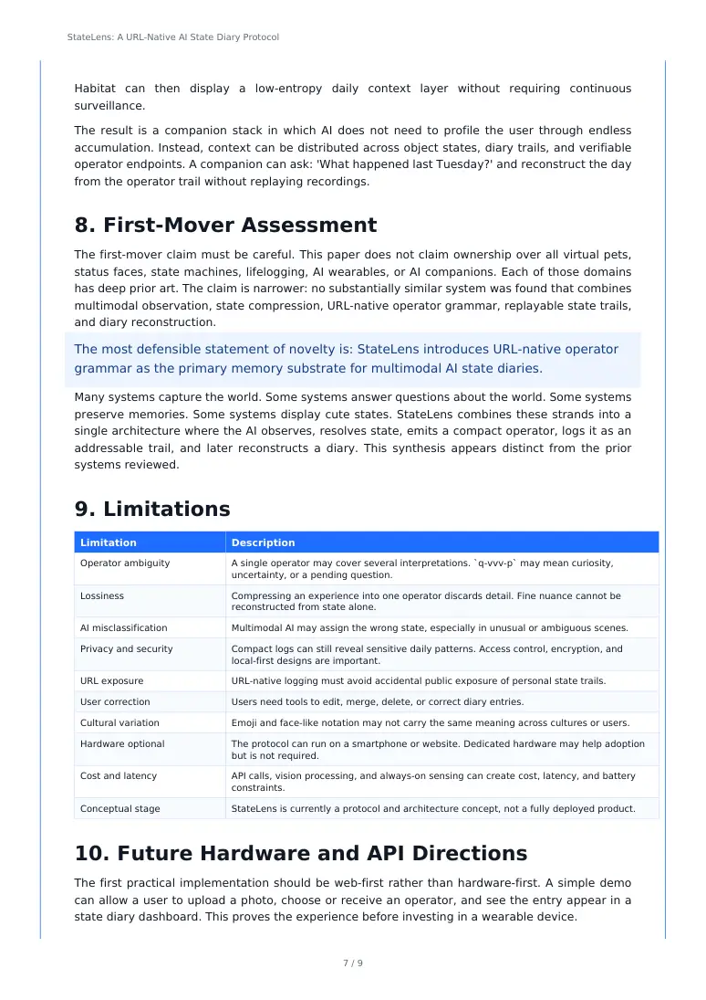

PDF page 1
StateLens: A URL-Native AI State Diary Protocol
for Multimodal State Compression and Day Reconstruction
Raynor Eissens · StateLens.net · Raynor Stack
Existing DOI: 10.5281/zenodo.20770792
Abstract
StateLens is an AI state diary protocol that compresses rich multimodal interactions into concise, URL-native operator states. Unlike traditional lifelogging or wearable AI systems that record raw data, photos, audio, transcripts, summaries, or assistant actions, StateLens emits a low-entropy symbolic output for each moment. In practice, StateLens does not preserve life as raw data. It preserves the shape-change of the day. The output is both human-readable and machine-readable: a sequence of compact operators, accompanied by simple context tags and timestamps. This chain of operators forms a replayable diary of state transitions. Importantly, StateLens is not symbolic mysticism. It is a practical state protocol for AI memory. Where Google Lens identifies the world, StateLens resolves the world into state. The primary contribution is URL-native semantic state compression as a memory substrate for multimodal AI observation: a structured, addressable representation of experience that contrasts with bulk data logging or plain-text diaries. By archiving only semantic state changes rather than raw inputs, StateLens aims to enable efficient later reconstruction of a user's day without continuous surveillance or massive storage.
Core pipeline: World input -> Multimodal AI -> State resolution -> URL-native operator trail -> Diary reconstruction
1 / 9
PDF page 2
StateLens: A URL-Native AI State Diary Protocol
1. Introduction
The AI paradigm is shifting from isolated chatbots to context-aware, ambient systems that perceive and interact with the real world. Future AI wearables and companions may continuously see, hear, and sense their environment. However, most existing designs still produce outputs such as speech, text answers, stored recordings, summaries, profiles, or assistant actions - not abstract states.
For example, Google Lens can identify objects, plants, or text in view, but it does not record a semantic state of the scene. Voice assistants can answer questions or log reminders, but they typically store transcripts or user profiles rather than a condensed state trace. Multimedia lifelogging systems tend to archive raw photos, audio, screen captures, or transcripts for later search. Even emerging memory tools help organize notes and identities, rather than outputting an event grammar.
In contrast, StateLens proposes that an AI's output can be a formal state rather than raw data or text. In each moment, StateLens asks not 'What is this object?' but 'Into what state did this moment resolve?' The answer is a compact operator code. In other words: Google Lens identifies the world. StateLens resolves the world into state. This makes the AI output suitable for later diary reconstruction.
StateLens is therefore not a generic AI assistant, not a conventional wearable, and not a lifelogging platform. It is a specific memory protocol. It does not try to capture an entire life as a data dump. Instead, it extracts the semantic transitions that occurred.
To clarify the intent: StateLens is not symbolic mysticism. It is a practical state protocol. It is meant to be a world-ingress layer for AI companions, object-memory systems, and ambient interfaces. The protocol is concrete: a finite operator grammar, structured URL logging, and a reconstruction model. The goal is continuity of experience, expressed in a disciplined technical way.
2. Prior-Art Review
This section compares StateLens to adjacent systems from virtual pets, vision AI, wearable AI, memory systems, and companion chatbots. The relevant criteria are: multimodal observation, state compression as primary output, symbolic operator grammar, URL-native addressability, replayable state trail, and diary reconstruction. No existing system was found that satisfies all criteria together.
Category Similarity Missing components relative to StateLens
Tamagotchi, Digimon, Chao Moderate Visible state and care loops, but no real-world sensing, no multimodal AI, no URL-native operator trail, and no diary reconstruction.
Dreamcast VMU Moderate Portable save-state visibility and small-screen display, but no camera input, no AI interpretation, no state grammar, and no web-native logging.
Google Lens Moderate Multimodal camera recognition, but output is identification/search/retrieval rather than semantic state compression or diary reconstruction.
Humane AI Pin, Rabbit R1, Meta Ray-Ban
Moderate Multimodal or wearable context, but output remains speech, text, recordings, transcripts, summaries, or actions - not URL-addressable state trails.
2 / 9
PDF page 3
StateLens: A URL-Native AI State Diary Protocol
Category Similarity Missing components relative to StateLens
MyLifeBits, Rewind, Limitless, Recall
Moderate-High Strong memory/lifelogging orientation, but storage is raw media, screenshots, audio, transcripts, or searchable timelines rather than finite operator-state compression.
Mem.ai, Personal.ai Low-Moderate AI memory and organization, but no multimodal world-ingress, no symbolic operator grammar, and no URL-native state diary.
Replika, Pi, Character AI, Friend
Low Companion memory and relational continuity, but no open operator lexicon, no URL-native state endpoints, and no replayable state diary.
2.1 Virtual Pets and Portable State
Early digital pets maintain an internal state such as hunger, sleep, happiness, age, or strength. Bandai's Tamagotchi, Digimon Digital Monster devices, and related virtual-pet systems demonstrate that small discrete states can be emotionally legible and engaging. The Dreamcast VMU demonstrates a related idea: portable state can be carried outside the main console and displayed on a small device. However, these systems are closed loops. They do not observe the user's world, do not use multimodal AI, and do not create URL-native operator trails. They prove that state visibility matters, but not that world-observation can become a state diary.
2.2 Vision AI and Wearable AI
Google Lens and similar vision systems provide strong image-based recognition. They can identify objects, translate text, find similar images, and surface search results. Their primary output, however, is information retrieval: a label, a search result, an action, or a translation. StateLens differs by asking a different question: not 'what is this?' but 'what state did this moment resolve into?'
AI wearables such as Humane's AI Pin, Rabbit R1, Meta Ray-Ban AI glasses, Limitless Pendant, and similar systems bring sensors closer to the body. They may support camera input, voice input, recordings, transcripts, summaries, and AI responses. Their dataflow tends to end in language, media storage, or assistant actions. StateLens instead ends in state. The distinction is small at the interface level but large at the memory level: the stored unit is not a recording or transcript, but a compact state transition.
2.3 Lifelogging and Digital Memory
Projects such as MyLifeBits, Rewind, Limitless, and Microsoft Recall aim to preserve or retrieve memory by capturing large volumes of data: documents, images, audio, screen snapshots, transcripts, meetings, or activity timelines. AutoLife is closer to StateLens in that it generates semantic descriptions of daily life using smartphone sensor data and LLMs. Yet it remains a life-journaling system that generates natural-language journals, not a URL-native finite operator trail. StateLens can be described as more compressed: it stores the state-transition skeleton of a day rather than a transcript, video, screenshot archive, or natural-language journal.
2.4 AI Companions
AI companions such as Replika, Pi, Character AI, and Friend emphasize relational continuity. Some remember user facts, routines, preferences, or tasks. However, their memory is generally modeled as profile, conversation history, private embeddings, or assistant context. StateLens is different: it externalizes memory into a small, interpretable, addressable state trail. The companion is not the primary memory substrate; the operator trail is.
3 / 9
PDF page 4
StateLens: A URL-Native AI State Diary Protocol
In summary, no prior system was found that combines all of: multimodal observation, state compression as primary output, symbolic operator grammar, URL-native or domain-native addressability, diary reconstruction via state transitions, Tamagotchi/VMU-like state visibility, and AI-readable plus human-readable notation.
3. StateLens Architecture
StateLens transforms a user's momentary experience into an operator output and logs it in a web-native diary. The high-level pipeline is:
World input -> camera / sensors / image / object / document / activity -> multimodal AI -> state resolution -> operator selection -> URL-native operator trail -> state diary -> later reconstruction
The world input may be a camera frame, document scan, object encounter, product comparison, plant observation, game session, activity, location, or moment. A multimodal AI model interprets the input. The model may recognize objects, text, place context, activity, or attention state. The output, however, is constrained: the model must choose an operator from a finite vocabulary.
This makes StateLens a state-resolution system rather than a general recognition system. A recognition system asks: 'What is this?' A StateLens system asks: 'What state did this moment resolve into?' Seeing a street scene may resolve to `o-vvv-o`, indicating an open-field state. Comparing two products may resolve to `n-vvv-n`, indicating narrowed focus. An unclear scan may resolve to `x-vvv-x`, indicating conflict or ambiguity.
Once selected, the operator is logged with a timestamp and optional context tag. The context tag may be an emoji, object label, location label, or local object identifier. The raw image or audio does not need to be retained. The diary remains reconstructable because the operator has a defined meaning and the sequence of operators forms a state trail.
4. Operator Grammar Specification
StateLens uses a finite grammar of compact ASCII operators. These operators are designed as low-entropy output vocabulary for multimodal AI. They are ASCII-native, URL-safe, domain-compatible, human-readable, machine-readable, compact, emotionally legible, and runtime-independent.
Operator State Meaning
o-vvv-o field / open state Entering or moving in a broad environment.
o-www-o open web / broad retrieval Opening or scanning a broad information space.
ovvv-o scout left / directed trail Following a promising trail or source cluster.
o-vvvo scout right / route movement Moving to an adjacent route or perspective.
q-vvv-p question / uncertainty Curiosity, uncertainty, or a pending test condition.
n-vvv-n narrow / focus Concentrated attention on an object, decision, or document.
0-vvv-0 validation / stable parse A stable reading, validated state, or settled interpretation.
4 / 9

PDF page 5
StateLens: A URL-Native AI State Diary Protocol
Operator State Meaning
p-vvv-q resolution / answer An answer, conclusion, or resolved output.
o-mmm-o memory ingest The result is ingested into memory or a trail.
u-vvv-u archive / rest The state is dormant, archived, or at rest.
d-vvv-b object A / source object Object-bound evidence or source object entering a route.
b-vvv-d object B / returned object Returned, compared, or grounded object evidence.
x-vvv-x conflict / fracture Contradiction, ambiguity, hallucination risk, or unresolved conflict.
e-vvv-e empty / no data No relevant data present or no signal yet.
a-vvv-a active / live sensing The system is currently scanning or sensing.
s-vvv-s sync / updating The system is updating context or synchronizing state.
r-vvv-r repair / recovery The system is recovering from a conflict or error.
z-vvv-z sleep / paused The state is paused, sleeping, or in low-power mode.
The operator is not a character. The operator is a portable semantic state. The face may be cute for humans, but it is operational for AI. In other words, `q-vvv-p` is not an animated persona. It is the abstract state of question, uncertainty, or curiosity. The same operator can represent a document question, a product question, a plant question, a game quest, or a provenance uncertainty. The runtime changes; the operator does not.
This grammar allows an AI system to output a small, bounded vocabulary instead of producing long text. It also allows downstream systems to parse the state without interpreting a natural-language sentence. This makes StateLens closer to an operating-system state layer than a chatbot response layer.
5. URL-Native Verification Layer
A distinguishing feature of StateLens is that each operator is not only a symbolic state but also an internet-verifiable entity. Operators may be represented as semantic URLs or domains, including `q-vvv-p.com`, `0-vvv-0.com`, `x-vvv-x.com`, and `u-vvv-u.com`. These domains can serve as public anchors for canonical definitions, examples, repair instructions, provenance references, or cryptographic verification methods.
Traditional systems: state != address
StateLens: state + address
For example, the operator `x-vvv-x` indicates conflict, ambiguity, contradiction, hallucination risk, or unresolved input. As a URL, `https://x-vvv-x.com` can become an addressable endpoint that documents the conflict state, lists examples, links to repair procedures, or verifies a logged entry. Similarly, `q-vvv-p.com` can explain the question state, and `0-vvv-0.com` can define validation or stable parse.
This creates a dual role: semantic state and addressable endpoint. The operator trail is therefore not just a timeline, but a ledger of resolvable addresses. Each entry is simultaneously a semantic marker and a pointer for audit. StateLens operators can function as runtime outputs, memory artifacts, diary entries, provenance receipts, URLs, and verification endpoints.
5 / 9

PDF page 6
StateLens: A URL-Native AI State Diary Protocol
No prior system was identified that made semantic state operators into globally resolvable internet entities in this way. The URL-native verification layer is therefore part of the specific synthesis proposed here.
6. Day Reconstruction Examples
A StateLens day is reconstructed from timestamped context tags and operator states. The following example avoids full raw capture. It stores only a moment tag, operator, timestamp, and short label.
Time Context Operator State note
10:12 city / town o-vvv-o Going into town; open field state.
10:48 toy shop q-vvv-p Interest opens near a toy shop.
11:23 shoes n-vvv-n Comparing shoes; attention narrows.
11:41 shoes 0-vvv-0 Shoe choice stabilizes.
12:36 kebab / food p-vvv-q Food moment resolved.
14:05 flower q-vvv-p Curious flower seen; optional later identification.
14:09 insect x-vvv-x Unclear insect scan; conflict or ambiguity.
15:22 supermarket s-vvv-s Product comparison is synchronized.
18:40 tax paper n-vvv-n Document needs careful focus.
21:10 evening u-vvv-u Diary reviewed and archived.
Later, an AI or the user can reconstruct the day: the user went into town, met a friend near a toy shop, compared shoes, resolved a purchase decision, ate, noticed a flower, encountered an unclear insect scan, compared supermarket products, focused on tax paperwork, and archived the day. The full video, conversations, and detailed browsing history are not needed. The system preserves the state transitions - the shape-change of the day.
This differs from a conventional diary because the stored unit is not text written after the fact. It also differs from lifelogging because it does not store raw media. The StateLens diary is a compact trail of state transitions that remains machine-readable and human-legible.
7. Companion Stack Integration
StateLens is intended as the world-ingress layer of a broader companion architecture. It supplies observed states to systems that retain, verify, route, and experience context.
GGTruth = what is known StateLens = what is observed Trailstate = how it was resolved ObjectPortal = where it lives AI Switch Palace = how it continues Companion Habitat = how it is experienced Ambient Phone = attention interface / ambient access layer
In this model, StateLens feeds ObjectPortal with object-bound state. A tax paper, plant, PlayStation, product, or game session can receive state rather than leaving all context inside a chat. StateLens also feeds Trailstate with provenance: how the state was resolved, whether it passed validation, whether conflict was detected, and whether repair occurred. Companion
6 / 9

PDF page 7
StateLens: A URL-Native AI State Diary Protocol
Habitat can then display a low-entropy daily context layer without requiring continuous surveillance.
The result is a companion stack in which AI does not need to profile the user through endless accumulation. Instead, context can be distributed across object states, diary trails, and verifiable operator endpoints. A companion can ask: 'What happened last Tuesday?' and reconstruct the day from the operator trail without replaying recordings.
8. First-Mover Assessment
The first-mover claim must be careful. This paper does not claim ownership over all virtual pets, status faces, state machines, lifelogging, AI wearables, or AI companions. Each of those domains has deep prior art. The claim is narrower: no substantially similar system was found that combines multimodal observation, state compression, URL-native operator grammar, replayable state trails, and diary reconstruction.
The most defensible statement of novelty is: StateLens introduces URL-native operator grammar as the primary memory substrate for multimodal AI state diaries.
Many systems capture the world. Some systems answer questions about the world. Some systems preserve memories. Some systems display cute states. StateLens combines these strands into a single architecture where the AI observes, resolves state, emits a compact operator, logs it as an addressable trail, and later reconstructs a diary. This synthesis appears distinct from the prior systems reviewed.
9. Limitations
Limitation Description
Operator ambiguity A single operator may cover several interpretations. `q-vvv-p` may mean curiosity, uncertainty, or a pending question.
Lossiness Compressing an experience into one operator discards detail. Fine nuance cannot be reconstructed from state alone.
AI misclassification Multimodal AI may assign the wrong state, especially in unusual or ambiguous scenes.
Privacy and security Compact logs can still reveal sensitive daily patterns. Access control, encryption, and local-first designs are important.
URL exposure URL-native logging must avoid accidental public exposure of personal state trails.
User correction Users need tools to edit, merge, delete, or correct diary entries.
Cultural variation Emoji and face-like notation may not carry the same meaning across cultures or users.
Hardware optional The protocol can run on a smartphone or website. Dedicated hardware may help adoption but is not required.
Cost and latency API calls, vision processing, and always-on sensing can create cost, latency, and battery constraints.
Conceptual stage StateLens is currently a protocol and architecture concept, not a fully deployed product.
10. Future Hardware and API Directions
The first practical implementation should be web-first rather than hardware-first. A simple demo can allow a user to upload a photo, choose or receive an operator, and see the entry appear in a state diary dashboard. This proves the experience before investing in a wearable device.
7 / 9

PDF page 8
StateLens: A URL-Native AI State Diary Protocol
• Web demo: upload or capture a photo and receive an operator.
• Smartphone camera snapshot -> AI API -> operator output.
• State diary dashboard with timestamp, context tag, operator, and optional correction.
• ObjectPortal binding for objects, locations, games, documents, or products.
• Trailstate receipts for provenance and verification.
• Optional VMU/Tamagotchi-like hardware with a tiny display that shows only the current state.
• Local-first or privacy-preserving processing where raw input is discarded after state resolution.
• User-controlled deletion, reversible archive, and correction tools.
• API outputs constrained to the operator vocabulary instead of long text.
A dedicated hardware device could eventually sit between input, output, user, world, and AI. However, the crucial invention is not the hardware shell. The crucial layer is the operator protocol: the finite, URL-native state vocabulary that lets AI resolve the world into diary-ready state.
11. Conclusion
StateLens can be described as a novel synthesis of Tamagotchi, Dreamcast VMU, multimodal AI, state compression, URL-native operator grammar, and state diary reconstruction. Its core contribution is not a new camera, companion, or wearable. It is a memory substrate: compact semantic state operators that are readable by humans, parsable by machines, replayable across time, and addressable through the web.
Google Lens identifies the world. StateLens resolves the world into state. StateLens does not preserve life as raw data. It preserves the shape-change of the day. The face is cute for humans, but operational for AI. The operator is not a character. The operator is a portable semantic state.
References
[1] Bandai. Tamagotchi product history and virtual pet lineage. See also general descriptions of Tamagotchi as a handheld digital pet device.
[2] Sega. Dreamcast Visual Memory Unit (VMU), including LCD display, save memory, and mini-game functionality.
[3] Digimon / Digital Monster virtual pet devices, including portable care, stats, and linking features.
[4] Sonic Adventure / Chao Garden virtual-pet systems and portable continuity through Dreamcast VMU-era play patterns.
[5] Google Lens. 'Search what you see' and 'How Lens Works'. Google official Lens documentation.
[6] Humane AI Pin. Public reporting on AI Pin design, camera/speaker/projector features, HP acquisition, and shutdown of AI Pin services in 2025.
[7] Rabbit R1. Rabbit official support material and product descriptions, including voice recording, transcripts, and AI summaries.
[8] Ray-Ban Meta smart glasses. Public documentation and reporting on camera, audio, and AI visual-query features.
[9] Limitless AI Pendant / Rewind. Public product pages and reporting on AI wearables that capture and transcribe conversations.
[10] Microsoft Recall. Microsoft support documentation on Recall snapshots, searchable timeline, local storage requirements, and privacy controls.
[11] Gemmell, J.; Bell, G.; Lueder, R. MyLifeBits: a personal database for everything. Microsoft Research / Communications of the ACM, 2006.
8 / 9
PDF page 9
StateLens: A URL-Native AI State Diary Protocol
[12] Mem.ai. Public product material describing AI note-taking, memory, meeting recording, and organization features.
[13] Personal.ai. Public product material describing personal AI memory infrastructure and agent identity.
[14] Replika, Character AI, Pi, Friend. Public product material and reporting on AI companions, persistent memory, and wearable companion interfaces.
[15] Xu, H.; Tong, P.; Li, M.; Srivastava, M. AutoLife: Automatic Life Journaling with Smartphones and LLMs. arXiv:2412.15714, 2024.
[16] OpenAI and Jony Ive / io. Public announcements and reporting on OpenAI's acquisition of io and future AI device work. Details remain limited and should be treated as uncertain until public product specifications exist.
9 / 9